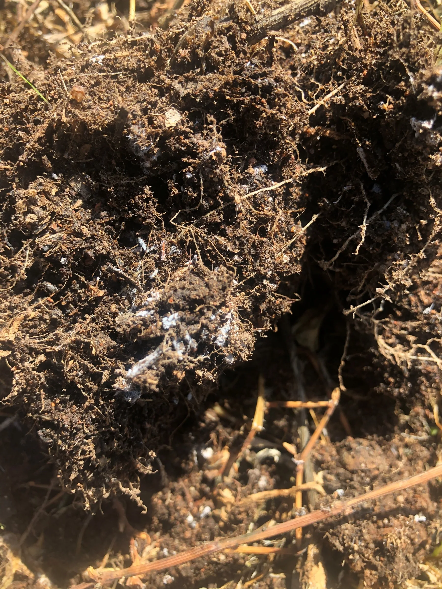

Name the paddock, block or zone and separate areas with a different soil type, history, drainage or crop response.

Soil testing and interpretation
Understand your soil before choosing a blend.
A soil report helps identify the requirements of the area being tested. Hybrid-Ag considers the sampling depth and method alongside crop history before recommending a prescription blend or further investigation.
Before sampling
Define the area being tested.
Define the paddock, block or management zone and sampling depth first. Record the sampling method and what you need to understand about the soil.
Confirm the depth, sampling pattern, laboratory suite and method so later results can be compared on the same basis.
Explain the crop, rotation and season, and what the test needs to help you decide.
What the report measures
A soil report covers more than NPK.
The exact suite depends on the question and laboratory method. A useful interpretation may connect acidity, salinity, Nutrient measures, Carbon, cation balance, trace elements and the physical soil description.
pH and electrical conductivity
Interpret acidity or alkalinity and soluble salt levels using the reported method, soil type, crop and root-zone conditions.
Phosphorus, Potassium and Sulphur
Keep the extraction method and unit attached. Different methods do not create interchangeable numbers.
Mineral Nitrogen
Review nitrate and ammonium results beside sampling depth, timing, crop demand, rotation, moisture and recent management.
Organic Carbon
Consider the Carbon result and its test method alongside the other soil measurements and field observations.
Exchangeable cations
Read Calcium, Magnesium, Potassium, Sodium and Aluminium relationships with texture, pH, structure and crop context.
Trace and physical context
Connect measured trace elements with texture, gravel, colour and field observations where those details are included or relevant.
Method before comparison
Compare results that use the same method.
Soil results may use different extraction methods or reporting bases. The table below shows examples you may see on a report. The team confirms which tests are needed for your crop.
Soil pHWater or CaCl2
Keep the solution method visible when comparing values, targets or previous reports.
Phosphorus and PotassiumColwell, mg/kg
An extraction result needs its named method and unit before it can be interpreted or compared.
Sulphur and mineral NitrogenKCl extraction, mg/kg
Sampling depth, timing, moisture and crop or rotation history affect how these results are interpreted.
Organic CarbonMethod named, %
For example, a Walkley-Black result should remain identified rather than being treated as method-free total Carbon.
Exchangeable cationsmeq/100 g
Calcium, Magnesium, Sodium, Potassium and Aluminium are read as related measures, not isolated percentages.
Trace elementsExtraction named, mg/kg
DTPA Copper, Zinc, Manganese and Iron are examples; Boron and other elements may use different methods.
Specific questions may call for additional measures such as chloride, total Phosphorus or a saturated-paste assessment. More measurements are not automatically more useful; the test needs to address the issue being investigated.
From result to prescription
The soil test becomes a kg/ha requirement.
Hybrid-Ag calculates the kilograms per hectare of each relevant element required to move the sampled soil toward balance. That calculation helps guide the prescription for the nominated paddock, block or zone, alongside crop demand and what is practical to address this season.
Explore dry and granular blends
kg/ha
The measured requirement guides the blend. The team also considers crop demand, previous applications, budget and equipment when planning what to address this season.

Interpretation before prescription
A soil result does not prove what the plant received.
The report measures Nutrient levels and conditions in the sampled soil. What the plant can access also depends on root activity, water, temperature, biology and crop stage.
- The soil
- Describes the sampled soil, with the location, depth, date and method recorded.
- The plant
- Leaf, tissue or paired sap data can show what reached the sampled crop at a particular stage.
- The season
- Weather, irrigation, rotation, inputs and crop response help explain differences between the soil and plant results.
The Hybrid-Ag approach
Position. Pattern. Plan.
Read the soil report alongside sampling details, crop history and observations from the paddock or block.
01Position
What does the current test show?
Establish the sampled area, depth, method, current crop and the measures relevant to the decision.
02Pattern
What helps explain the result?
Compare results taken on the same basis, considering soil type, sampling zones, rotation, inputs and weather.
03Plan
What should happen next?
Discuss whether to change the nutrition plan, investigate further or arrange a repeat test.
Before sampling
Prepare before taking the sample.
01
Define the paddock, block or zone
Keep areas with different soil, history, drainage or crop performance separate.
02
Confirm depth and protocol
Use the current crop and laboratory sampling instructions so the result represents the intended layer.
03
Record crop and rotation
Include the current crop, previous crop, growth stage and the decision the test needs to support.
04
Note recent management
Fertiliser, lime, amendments, irrigation and unusual seasonal events can change how a result should be read.
05
Keep prior reports intact
Previous depth, method, date and zone are essential if the aim is to understand a pattern over time.
Start with the area and the question